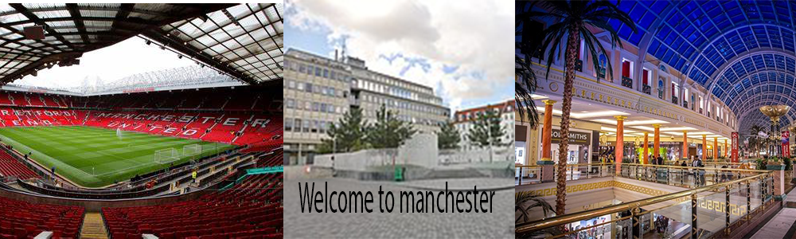

Home trafford centre Manchester City chill factor old trafford
Trafford centre
The Trafford Centre is one of the biggest places to go shopping if you cant find what you need there then it must either be from the 1500s or it doesnt exist with the wide varity of shops in there from the tech stores to the designer stores to the food outlets anything you need the trafford centre should be able to find with quiet ease and it is very safe with the full shopping centre filled with security guards and police in the area in the food courts there is a wide variety from chinese cuisine to a nicew italian cuisine they have everything your hears desires if you need to buy these specific shoes theres is over 500 shops which more than likely will have the exact shoe for a cheaper possibility there are quiet a lot of shops in this area the designer brands you will be able to get them with a lot of ease the trafford centre offers the likes of selfridges which is all designer brands and is aimed at a wealth portion of people whilst maybe cheaper brands such as sports and soccer would be aimed at a middle class set off people because it aint aimed brands and they are slazenger and umbro these are the type of brands that a large group of people go for because it isnt to expensive and is in a lot of peoples price range and with quiet a lot of people being able to afford it there is also a lot of architecture and there are museums near by
click here to find out more information about the trafford centre!